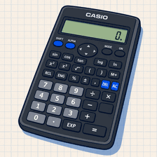
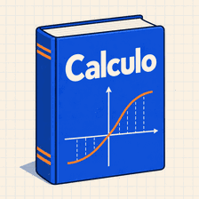
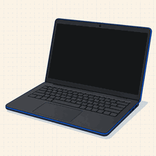
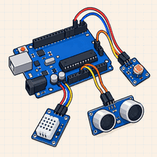

Parcial
Parcial 2 resuelto
Análisis Matemático I
2025 · Prof. Gómez · PDF
38
Ver recurso
Reuní parciales, apuntes y experiencias para preparar tus materias con una ruta clara. Entre todos, llegamos más lejos.
Lo último que compartió la comunidad.
Análisis Matemático I
Álgebra Lineal
Física I
Matrices
Charlas, talleres y fechas de la facultad. Marcá los que te interesan y te avisamos.
Y el miércoles 30 cierra la inscripción a mesas.

 SÁB 26 SEP
SÁB 26 SEP

 31 interesados
31 interesados SÁB 17 OCT43 interesados
SÁB 17 OCT43 interesados MIÉ 21 OCT58 interesados
MIÉ 21 OCT58 interesadosCómo les fue a otros en la misma materia.
“Los parciales se parecen mucho a los prácticos. Si hacés todas las guías a tiempo, llegás bien.”
“Tomaron dos ejercicios de integrales y una demostración. Preparé con los finales viejos de la carpeta y alcanzó.”
“Los trabajos prácticos se entregan todas las semanas. Si no te atrasás con eso, el parcial se hace mucho más liviano.”

Publicaciones recientes de la comunidad.

Vendo
Busco
Vendo
VendoEncontrá ayuda para entender un tema o publicá tu tutoría. El conocimiento también se comparte entre pares.
Disponible
Disponible
Disponible
“Estoy viendo dinámica y me cuesta entender la segunda ley de Newton. Busco a alguien que pueda explicarme con ejercicios.”